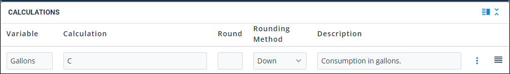
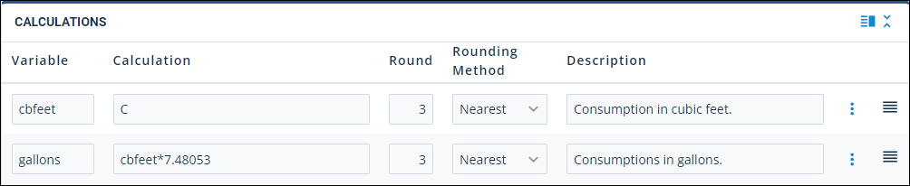
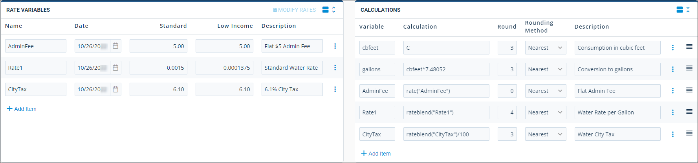
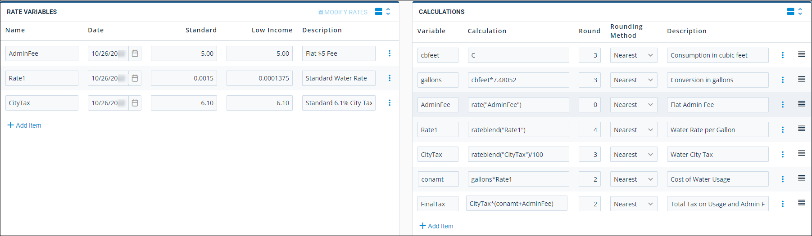
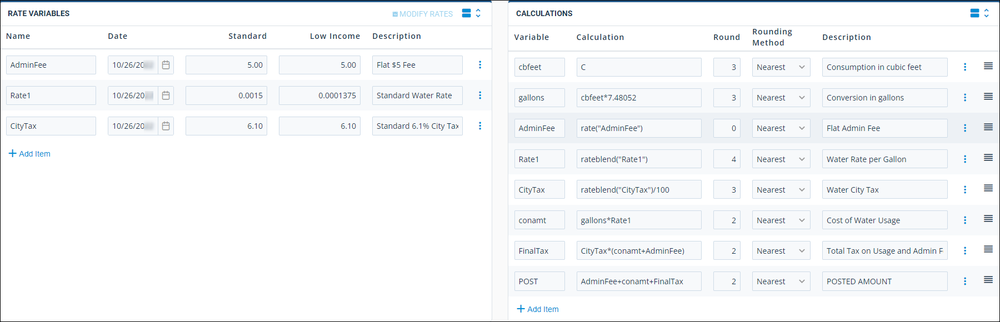

Source: https://rmxhelp.rentmanager.com/Topics/Express/KB/MU-Plus-Rate-Calculations-Set-Up.htm
Set Up MU-Plus Rate Calculations
The Calculations section, located in the Meter Type Details page for Metered Utilities Plus (MU-Plus) meter-types, is where you combine rates with tenant consumption along with other fees and/or discounts to determine the final utility charge for a tenant. Since these calculations are exclusively established through scripting, you can create formulas that match the billing strategies of virtually any utility provider.
The calculation's purpose is to re-create the billing algorithm of your utility provider so that Rent Manager can post accurate utility charges to tenants based on their consumption of that utility.
Related Privileges
| Group | Privilege | Column |
|---|---|---|
| Utilities | Metered utilities | Enabled |
| Meter types | View, Edit |
For more information, refer to Control User Access.
Step 1: Add a Rate Calculation
To add a new rate calculation, do the following:
-
Go to
 arrow_forward Services arrow_forward Metered Utilities arrow_forward Meter Types.
arrow_forward Services arrow_forward Metered Utilities arrow_forward Meter Types.
The Meter Types page displays. -
Select an MU-Plus utility from the list.
The Meter Type Details page displays. -
In the Calculations section, click
 Add Calculation.
Add Calculation.
Step 2: Declare Consumptions
First, introduce the tenant's consumption into the formula by creating a variable and setting it equal to C which stands for the system variable for the tenant's utility consumption. Rent Manager calculates C by taking a tenant's current reading and then subtracts the previous reading.

More Information
If the meter calculates consumption in a unit of measurement that is different from the unit of measurement in which tenants are billed, you may need to enter a calculation line.
For example, if the meter reads a tenant's water usage in cubic feet but tenants are billed for their usage in gallons, then you need to create a calculation that multiplies consumption by 7.48052 which is the conversion from cubic feet to liquid gallons.

Step 3: Declare Rates and Fees
With consumption defined in the formula, introduce the rates. Defined Metered Utilities Plus (MU-Plus) rate variables represent the various costs, discounts, and consumption rates associated with this utility. However, none of those variables have any impact on the formula until they are formally introduced into the Calculations section. For more information about rate variables, refer to Set Up MU-Plus Rate Variables.
The following sections breakdown each type of rates and fees you can use in the Calculation field.
Establish Blended or Unblended Rates
For each rate variable introduced into this section, decide if the variable should be blended. A blended rate means you want to take into consideration any rate changes that occurred since the last time you collected readings and posted the utility. Rent Manager introduces the variable into your formula as a mix of the old and new rates. If you choose not to blend, then it doesn't matter if the rate variable recently changed, Rent Manager uses the most current value available for your calculations.
The following scripts are used to introduce rate variables into your formula. This is where you decide, for each variable, whether its value should be blended or not.
RateBlend('variable')
The RateBlend function blends the specified rate variable value based on the date of the rate change and the number of days in the consumption period.
For example, if the name of the variable is Tier1 the script becomes RateBlend('Tier1'). There have been 30 days between the last reading date and the current reading date. In the first 10 days of this period, Tier1 was defined at a value of 1.5. For the next 20 days in the period, Tier1 changed to 1.6.
Rent Manager takes 1.5 and multiples it by 10 days, then takes 1.6 and multiplies it by 20 days, adds up those two totals and divides the result by the full 30 days in the period to come up with a new average (blended) rate as shown in the following formula:
(1.5 * 10 + 1.6 * 20) / 30 = 1.5667
Rate('variable')
The Rate function uses the most current value for the specified variable regardless of recent changes to the rate.
As an example, use Rate('Tier1'). There have been 30 days between the last reading date and the current reading date. In the first 10 days of this period, Tier1 was defined at a value of 1.5. For the next 20 days in the period, Tier1 changed to 1.6.
In this case, Rent Manager doesn't care about the recent change. 1.6 is used in any subsequent formulas that use the Tier1 variable.
More Information
By default, these two functions examine the Standard rate variable value unless the tenant is specifically flagged as a low Income account.
Rate Variable Examples
Once consumption is introduced and converted into billing units, you can introduce rates. Remember, variables do not have any impact on formulas until they are formally introduced into the Calculations section.
In the example below, three rates are critical in assessing the overall utility charge. There is an administrative flat fee, a rate that charges per gallon, and a city tax that needs to be introduced in the next three rows of the Calculations section.

In the Rate Variables section, the first rate introduced is the administrative flat fee. Since this is a flat fee, and is not blended, it utilizes the Rate function. The second rate introduced is what tenants are charged per gallon (Rate1). In order to take into consideration any rate changes that may occur, the RateBlend function is used.
The last rate introduced is city tax. Since taxes can change, the RateBlend function is appropriate. On the Calculations tile, notice that the RateBlend('CityTax') function is divided by 100 to account for the 6.1% established in the Rate Variables tile. While you could set the rate to .061 in the Rate Variables tile, it is recommended that you perform conversions in the Calculations tile to keep your Rate Variables tile simple.
With the three rates introduced, perform a calculation that multiplies the tenant's consumption (gallons) by the billing rate (Rate1). In this example, the result is stored in a new variable called conamt.
In order to apply the city tax to the grand total of what the tenant is charged, create a FinalTax variable. This variable stores the result of city taxes (CityTax) multiplied by the sum of consumption cost (conamt) plus the administrative fee (AdminFee).

More Information
The following scripting rules are unique to the Calculations tile of Metered Utilities Plus (MU-Plus).
-
Variables do not have dollar signs ($) in front of them.
-
Variables are not case-sensitive.
-
Variables are contained between either single (') or double (") quotes, with the exception of Rate and RateBlend functions which are always contained between single quotes.
Step 4: Enter Calculation Details
Each row in the Calculations section generates a single calculation and stores its results in a defined variable. Once declared, a variable can be used in subsequent rows. The end-goal of this section is to create a calculation that sums up the itemized costs that have been calculated to produce a final consumption fee posted to the tenant.
Enter information into the following fields:
| Field | Description | |||||
|---|---|---|---|---|---|---|
|
Variable |
The result of the calculation entered in the Calculation field. |
|||||
|
Calculation |
This is the scripted calculation that is stored in the stated Variable column. You can use scripting in this column to perform simple-to-complex calculations. There are special rules for scripting in this field. |
|||||
|
Round |
Rounds the result of the calculation script to the specified decimal place. For example, rounding to 0 rounds to the nearest whole number, where 2 rounds the value to the nearest hundredth. |
|||||
|
Rounding Method |
This instructs how Rent Manager on how to round the calculation results. |
|||||
|
||||||
|
Description |
Explains the script in the Calculation column and its purpose in the overall formula. It's recommended to use these descriptions to make the meter type calculations more user-friendly. |
Step 5: Declare the Posting Amount
The end-goal of these calculations is to determine the tenant's utility fee based on their consumption. To complete the Calculations section, use the POST system variable. This system variable is always the last defined variable in the Calculations section.
POST is the system variable that stores the amount of the utility charge posted to a tenant based on their utility consumption. The tenant is not be billed for the POST amount until you actually post the utility in Rent Manager. For more information about the process of posting utilities, refer to Post Utilities.
